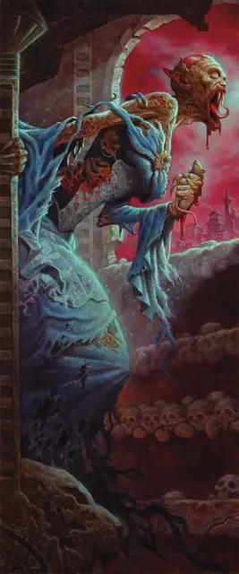

Вампир носферату
Vampire Nosferatu
Средняя или Маленькая Нежить, Хаотичная Злая

Класс Защиты 16 Инициатива +7 (17)
Хиты 85 (9к8 + 45)
Скорость 40 футов, Лазания 40 футов
| мод | спас | ||
|---|---|---|---|
| СИЛ | 20 | +5 | +5 |
| ЛОВ | 18 | +4 | +7 |
| ТЕЛ | 21 | +5 | +8 |
| мод | спас | ||
|---|---|---|---|
| ИНТ | 6 | −2 | −2 |
| МДР | 17 | +3 | +6 |
| ХАР | 14 | +2 | +2 |
Сопротивление урону Некротический
Иммунитеты Яд; Испуганный, Истощение, Отравленный, Очарованный
Чувства Тёмное зрение 120 футов, пассивное Восприятие 16
Языки Общий плюс ещё один язык
Опасность 8 (3 900 опыта; БВ +3)
Особенности
Кровавое бешенство. Носферату совершает с Преимуществом броски атаки против существ с неполными Хитами.
Регенерация. Носферату восстанавливает 10 Хитов в начале каждого своего хода, если у него есть хотя бы 1 Хит. Если носферату получает урон Излучением, то в его следующий ход эта особенность не срабатывает.
Паучье лазание. Носферату может лазать по сложным поверхностям, включая потолки, без совершения проверок характеристик.
Гиперчувствительность к солнцу. Носферату получает 20 урона Излучением, если начинает свой ход на солнечном свету. Пока носферату на солнечном свету, он получает Помеху к броскам атаки и проверкам характеристик.
Действия
Мультиатака. Носферату совершает одну атаку Укусом и две атаки Когтями.
Укус. Бросок рукопашной атаки: +8, досягаемость 5 фт. Попадание: 9 (1к8 + 5) Колющего урона плюс 11 (2к10) Некротического урона. Максимум Хитов цели снижается на число, равное полученному Некротическому урону, а носферату восстанавливает такое же количество Хитов.
Когти. Бросок рукопашной атаки: +8, досягаемость 5 фт. Попадание: 9 (1к8 + 5) Рубящего урона.
Кровавая рвота (Перезарядка 5–6). Спасбросок Телосложения: Сл 16, все существа в 15-футовом Конусе. Провал: 27 (6к8) Некротического урона, и цель не может восстанавливать Хиты в течение 1 минуты. Успех: Только половина урона.
Реакции
Кровожадное рассечение. Условие: Видимое носферату Окровавленное существо в пределах 40 футов от него получает урон. Эффект: Носферату перемещается на расстояние вплоть до его Скорости, не Провоцируя атак, и совершает одну атаку Когтями по спровоцировавшему существу.
Бонус мастерства +3
Среда обитания Город, Подземье
Сокровища Любые
Вампиры
Пьющие кровь владыки ночи
Вампиры скрывают свою проклятую бессмертную природу и выдают себя за живых, чтобы питаться их кровью. Самые младшие и кровожадные из них часто попадают в рабство к своим создателям, а невероятно хитрые и древние вампиры веками наслаждаются сверхъестественной властью над силами ночи.
Днём бессмертные создания скрываются в своих местах отдыха, недоступные для врагов и палящих солнечных лучей. Совершите бросок по таблице «Место отдыха вампира» для вдохновения или выберите сами мрачное место упокоения вампира.
Место отдыха вампира
| 1к6 | Место отдыха вампира находится… |
| 1 | Среди корней мёртвого дерева. |
| 2 | На дне затхлого пруда. |
| 3 | В гробу, наполненном могильной землёй. |
| 4 | В огромном сосуде с кровью или уксусом. |
| 5 | В недоступном для Гуманоидов пространстве. |
| 6 | Внутри скульптуры или комплекта доспехов. |
Носферату — злобные одичалые охотники, что прокляты примитивным ответвлением вампиризма. Эти алчные безыскусные хищники таятся в ночи, отчаянно ища крови, и смутно помнят утехи жизни.
Носферату кормятся всем, в чём есть кровь. Груды изувеченных крыс, конюшни, превращённые в скотобойни, и поля, усеянные зарезанным скотом, порой выдают присутствие носферату. Сами они прячутся в забытых местах, откуда ушло всё живое: в могильных пещерах, проклятых руинах и осквернённых курганах.
На пару кратких мгновений после кормления носферату обретают достаточно ясности, чтобы припомнить проблески былой жизни. Однако даже в эти минуты они остаются лживыми и коварными интриганами.